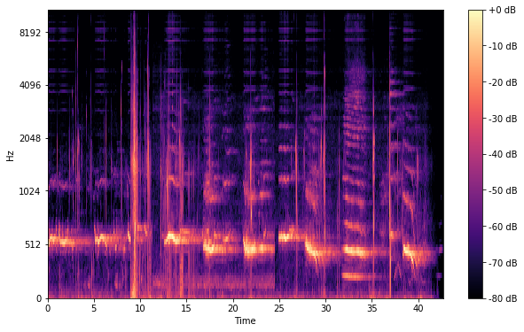
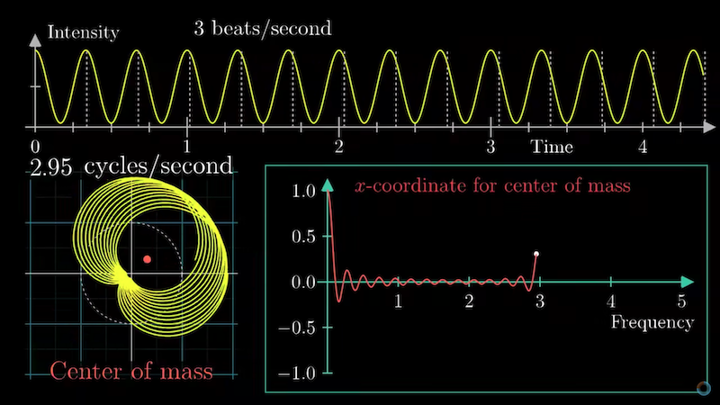
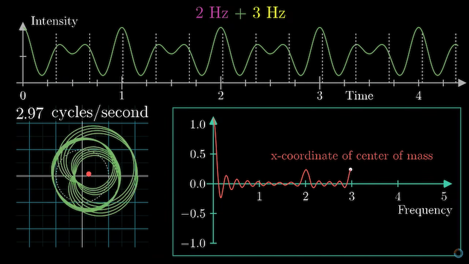

DSP
The "pure A", or first A above Middle-C, is 440 Hz.
Standard sample rate: 44.1 kHz
Humans can hear frequencies between 20 Hz and 20 kHz. (the "20-to-20" rule)
Sound is a graph of pressure over time. Multiple frequencies A440 or D294 sum and their peaks make double the pressure when aligned.
Mel Scale
Converts Hertz into the mel(ody) scale, which is a measure of pitch. Kind of like a log. 1000 mels = 1000 Hz. A440 = 549.64 mels.
From this:

To this: 
Fourier Transform
Fourier Transform coils the wave around a circle, and tweaks the winding frequency, then gets the center of mass of the coil, and graphs its distance from the origin. Wherever the graph peaks, that's where the underlying frequencies are.

